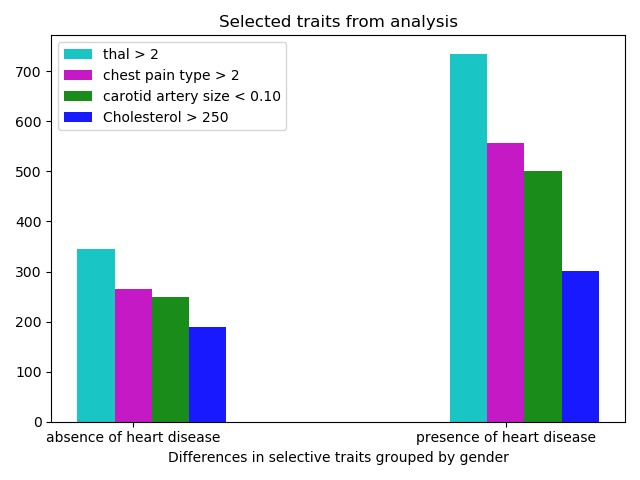
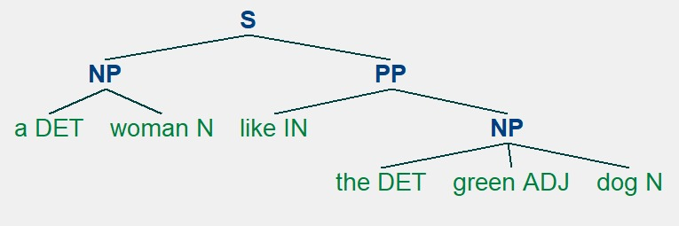
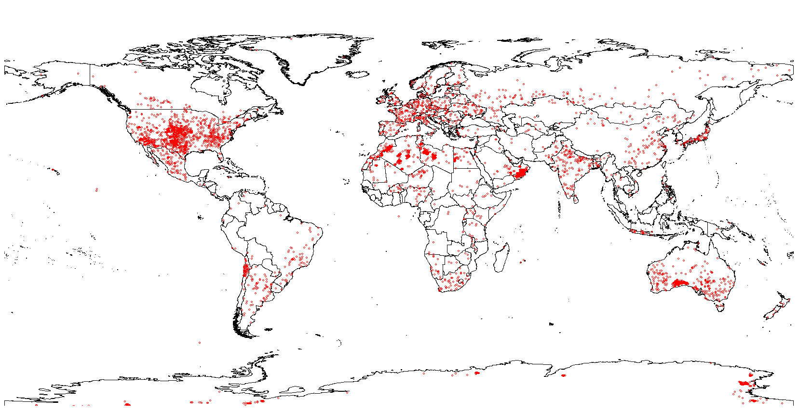

. . .
My experience with data science topics is primarily in Python and R with some small experience of Rapid Miner. Rapid miner being optional and python was an elective, I chose python given the opportunity for more programming. Completing information retrieval/web scraping in Python, using the CRISP-DM method of information processing. I chose a topic of Cardiovascular disease in a medium-sized dataset. After cleaning the data, the right topics were chosen as predictors for machine learning algorithms such as Naïve Bayes and Decision Trees. I really enjoyed this project a lot and the research on topics presented in the data. Understanding the data was also key to finding the right predictors. The machine learning algorithms were also susceptible to the type of information that was being processed as good predictors.

Similar projects in the area that I have completed are in the area of Text Analysis. For this, I scraped different communities on Reddit and processed the wording using natural language processing techniques and regular expressions to find terms that were good predictors for machine learning algorithms. The text was processed using many of the steps involved in natural language processing, having previously completed a module in this area where a part-of-speech tagger and parse tree generator was created in Python. For this project, the python NLTK library was widely used for tokenizing and parsing of text.
My experience with R was an elective project modelling data using the R programming language. This project in statistics was a group effort but we all had a good understanding of R after a short time. It is a very efficient language, we decided to look at a dataset provided by NASA for meteor data and model it, the ability to display large data in R is very effective.
